<!DOCTYPE html>
<html lang="en">
<head>
<meta charset="utf-8"/>
<title>Content Context</title>
<meta content="" name="keywords"/>
<meta content="We create tools and experiences that amplify voices, messages and ideas." name="description"/>
<meta content="width=450, initial-scale=0.7" name="viewport"/>
<script type="text/javascript">
				window._wpemojiSettings = {"baseUrl":"https:\/\/s.w.org\/images\/core\/emoji\/72x72\/","ext":".png","source":{"concatemoji":"http:\/\/contentcontext.org\/wp-includes\/js\/wp-emoji-release.min.js?ver=4.5.4"}};
				!function(a,b,c){function d(a){var c,d,e,f=b.createElement("canvas"),g=f.getContext&&f.getContext("2d"),h=String.fromCharCode;if(!g||!g.fillText)return!1;switch(g.textBaseline="top",g.font="600 32px Arial",a){case"flag":return g.fillText(h(55356,56806,55356,56826),0,0),f.toDataURL().length>3e3;case"diversity":return g.fillText(h(55356,57221),0,0),c=g.getImageData(16,16,1,1).data,d=c[0]+","+c[1]+","+c[2]+","+c[3],g.fillText(h(55356,57221,55356,57343),0,0),c=g.getImageData(16,16,1,1).data,e=c[0]+","+c[1]+","+c[2]+","+c[3],d!==e;case"simple":return g.fillText(h(55357,56835),0,0),0!==g.getImageData(16,16,1,1).data[0];case"unicode8":return g.fillText(h(55356,57135),0,0),0!==g.getImageData(16,16,1,1).data[0]}return!1}function e(a){var c=b.createElement("script");c.src=a,c.type="text/javascript",b.getElementsByTagName("head")[0].appendChild(c)}var f,g,h,i;for(i=Array("simple","flag","unicode8","diversity"),c.supports={everything:!0,everythingExceptFlag:!0},h=0;h<i.length;h++)c.supports[i[h]]=d(i[h]),c.supports.everything=c.supports.everything&&c.supports[i[h]],"flag"!==i[h]&&(c.supports.everythingExceptFlag=c.supports.everythingExceptFlag&&c.supports[i[h]]);c.supports.everythingExceptFlag=c.supports.everythingExceptFlag&&!c.supports.flag,c.DOMReady=!1,c.readyCallback=function(){c.DOMReady=!0},c.supports.everything||(g=function(){c.readyCallback()},b.addEventListener?(b.addEventListener("DOMContentLoaded",g,!1),a.addEventListener("load",g,!1)):(a.attachEvent("onload",g),b.attachEvent("onreadystatechange",function(){"complete"===b.readyState&&c.readyCallback()})),f=c.source||{},f.concatemoji?e(f.concatemoji):f.wpemoji&&f.twemoji&&(e(f.twemoji),e(f.wpemoji)))}(window,document,window._wpemojiSettings);
			</script>
<style type="text/css">
	img.wp-smiley,
	img.emoji {
		display: inline !important;
		border: none !important;
		box-shadow: none !important;
		height: 1em !important;
		width: 1em !important;
		margin: 0 .07em !important;
		vertical-align: -0.1em !important;
		background: none !important;
		padding: 0 !important;
	}
	</style>


<meta content="WordPress 4.5.4" name="generator"/>
<link href="wp-content/themes/contentcontext/assets/css/reset.css" media="screen" rel="stylesheet"/>
<link href="wp-content/themes/contentcontext/assets/fonts/franklin_gothic.css" media="screen" rel="stylesheet"/>
<link href="wp-content/themes/contentcontext/modules/jquery.colorpick/css/colorpicker.css" media="screen" rel="stylesheet" type="text/css"/>
<link href="wp-content/themes/contentcontext/modules/jquery.ui/css/ui-lightness/jquery-ui-1.10.2.custom.css" media="screen" rel="stylesheet" type="text/css"/>
<link href="wp-content/themes/contentcontext/assets/css/screen.css" media="screen" rel="stylesheet"/>
<link href="wp-content/themes/contentcontext/assets/css/responsive.css" media="screen" rel="stylesheet"/>
<link href="wp-content/themes/contentcontext/assets/css/debug.css" media="screen" rel="stylesheet"/>
<link href="wp-content/themes/contentcontext/assets/css/jqtouch.css" media="screen" rel="stylesheet"/>
<link href="wp-content/themes/contentcontext/assets/css/format-overrides.css" media="screen" rel="stylesheet"/>
<link href="wp-content/themes/contentcontext/assets/css/daneden-animations.css" media="screen" rel="stylesheet"/>
<style type="text/css">
	.accent-color {
		color: #002bff;
		color: rgba(0, 43, 255, 0.75);
	}
	.accent-color-opaque {
		color: #002bff;
	}
	.accent-bg {
		background-color: #002bff;
		background-color: rgba(0, 43, 255, 0.75);
	}
	.accent-bg-opaque {
		background-color: #002bff;
	}
	.accent-border {
		border-color: #002bff;
		border-color: rgba(0, 43, 255, 0.75);
	}
	#root.colorpick .post.home {
		opacity: 0.75;
	}
	#root .wrapper.content .post .content a {
		color: #002bff;
	}
	#root .type-nav {
	    font-size: 13px;
	    line-height: 19px;
	}
	#root .type-read {
	    font-size: 25px;
	    line-height: 30px;
	}
	#root .wrapper.content .post-wrapper .post.contact .people .person h3 a,
	#root .wrapper.content .post-thumb .real-link .project-name {
	    font-size: 24px;
	    line-height: 28px;
	}
	</style>
<link href="wp-content/themes/contentcontext/assets/img/favicon.png" rel="icon" type="image/png"/>


<script type="text/javascript">
	window.config = {"home":"http:\/\/contentcontext.org","name":"Content Context","desc":"We create tools and experiences that amplify voices, messages and ideas.","site_url":"http:\/\/contentcontext.org","grid":{"w":76,"h":23,"m":24,"img_w":176,"img_h":176},"ms_accent_color":"002bff","ms_accent_rgb":[0,43,255],"ms_accent_opacity":0.75};
	</script>
<script src="wp-content/themes/contentcontext/modules/jquery/jquery-1.9.1.min.js" type="text/javascript"></script>
<script src="wp-content/themes/contentcontext/modules/jquery.ui/jquery-ui-1.10.2.custom.min.js" type="text/javascript"></script>
<script src="wp-content/themes/contentcontext/modules/jquery.isotope/jquery.isotope-1.5.25.min.js" type="text/javascript"></script>
<script src="wp-content/themes/contentcontext/modules/jquery.easing/jquery.easing-1.3.js" type="text/javascript"></script>
<script src="wp-content/themes/contentcontext/modules/jquery.timers/jquery.timers-1.2.js" type="text/javascript"></script>
<script src="wp-content/themes/contentcontext/modules/jquery.waitforimages/jquery.waitforimages.min.js" type="text/javascript"></script>
<script src="wp-content/themes/contentcontext/modules/jquery.cookie/jquery.cookie.js" type="text/javascript"></script>
<script src="wp-content/themes/contentcontext/modules/js.context-blender/context-blender.js" type="text/javascript"></script>
<script src="wp-content/themes/contentcontext/modules/js.html2canvas/html2canvas.js" type="text/javascript"></script>
<script src="wp-content/themes/contentcontext/modules/jquery.colorpick/js/colorpicker.js" type="text/javascript"></script>
<!--[if lt IE 9]>
		<script src="assets/js/html5shiv.js"></script>
	<![endif]-->
<script src="wp-content/themes/contentcontext/frontend/vbadmintools.js" type="text/javascript"></script>
<script src="wp-content/themes/contentcontext/frontend/main.js" type="text/javascript"></script>
<!--<script type="text/javascript" src="http://contentcontext.org/wp-content/themes/contentcontext/frontend/blend.js"></script>-->
<script type="text/javascript">
	var _gaq = _gaq || [];
	_gaq.push(['_setAccount', 'UA-12020332-1']);
	_gaq.push(['_trackPageview']);
	(function() {
	var ga = document.createElement('script'); ga.type = 'text/javascript'; ga.async = true;
	ga.src = ('https:' == document.location.protocol ? 'https://ssl' : 'http://www') + '.google-analytics.com/ga.js';
	var s = document.getElementsByTagName('script')[0]; s.parentNode.insertBefore(ga, s);
	})();
	</script>
<script type="text/javascript">
    window.vb_base_url = 'http://contentcontext.org';
    window.vb_quotes = ["<p><a href=\"http:\/\/contentcontext.org\" class=\"accent-color-opaque\">We design for people.<\/a><\/p>","<p><a href=\"http:\/\/contentcontext.org\" class=\"accent-color-opaque\">Each job has its own content and context.<\/a><\/p>","<p><a href=\"http:\/\/contentcontext.org\" class=\"accent-color-opaque\">If we don\u2019t know, we ask. Not everyone is a rocket scientist.<\/a><\/p>","<p><a href=\"http:\/\/contentcontext.org\" class=\"accent-color-opaque\">Engaged Citizens<\/a><\/p>","<p><a href=\"http:\/\/contentcontext.org\" class=\"accent-color-opaque\">Good design for good causes.<\/a><\/p>","<p><a href=\"http:\/\/contentcontext.org\" class=\"accent-color-opaque\">For a good time call&#8230;<\/a><\/p>","<p><a href=\"http:\/\/contentcontext.org\" class=\"accent-color-opaque\">Smile<\/a><\/p>","<p><a href=\"http:\/\/contentcontext.org\" class=\"accent-color-opaque\">Make Less Think More<\/a><\/p>","<p><a href=\"http:\/\/contentcontext.org\" class=\"accent-color-opaque\">We are not afraid of the unknown. We learn from it.<\/a><\/p>","<p><a href=\"http:\/\/contentcontext.org\" class=\"accent-color-opaque\">Let&#8217;s be smart together.<\/a><\/p>","<p><a href=\"http:\/\/contentcontext.org\" class=\"accent-color-opaque\">If you&#8217;re looking for a sign, this is it.<\/a><\/p>","<p><a href=\"http:\/\/contentcontext.org\" class=\"accent-color-opaque\">Adventure is out there!<\/a><\/p>","<p><a href=\"http:\/\/contentcontext.org\" class=\"accent-color-opaque\">Each job has its own content and context.<\/a><\/p>","<p><a href=\"http:\/\/contentcontext.org\" class=\"accent-color-opaque\">The more you know&#8230;<\/a><\/p>","<p><a href=\"http:\/\/contentcontext.org\" class=\"accent-color-opaque\">Other fields give design purpose.<\/a><\/p>","<p><a href=\"http:\/\/contentcontext.org\" class=\"accent-color-opaque\">Dear past, thanks for all the lessons, dear future we&#8217;re ready now.<\/a><\/p>","<p><a href=\"http:\/\/contentcontext.org\" class=\"accent-color-opaque\">Where activism, socialism and modernity collide.<\/a><\/p>","<p><a href=\"http:\/\/contentcontext.org\" class=\"accent-color-opaque\">Don&#8217;t worry you&#8217;re in good hands, promise.<\/a><\/p>","<p><a href=\"http:\/\/contentcontext.org\" class=\"accent-color-opaque\">We explore in search of unexpected directions.<\/a><\/p>","<p><a href=\"http:\/\/contentcontext.org\" class=\"accent-color-opaque\">Inspired by constraints and excited to change.<\/a><\/p>","<p><a href=\"http:\/\/contentcontext.org\" class=\"accent-color-opaque\">Do Good. Be Good. Don&#8217;t Be A Jerk.<\/a><\/p>"];
    </script>
</head>
<body>
<div class="index page-index" id="root">
<div class="page">
<script type="text/javascript">
			window.vb_year_meta_info = [{"title":"2015","selector":".year-2015","slug":"2015"},{"title":"2014","selector":".year-2014","slug":"2014"},{"title":"2013","selector":".year-2013","slug":"2013"},{"title":"2012","selector":".year-2012","slug":"2012"},{"title":"2011","selector":".year-2011","slug":"2011"},{"title":"2010","selector":".year-2010","slug":"2010"},{"title":"2009","selector":".year-2009","slug":"2009"},{"title":"2008","selector":".year-2008","slug":"2008"},{"title":"2007","selector":".year-2007","slug":"2007"},{"title":"2006","selector":".year-2006","slug":"2006"},{"title":"2005","selector":".year-2005","slug":"2005"},{"title":"","selector":".year-","slug":""}];
			window.vb_cat_meta_info = [{"title":"Campaign","selector":".cat-campaign","slug":"campaign"},{"title":"Idea","selector":".cat-idea","slug":"idea"},{"title":"Identity","selector":".cat-identity","slug":"identity"},{"title":"Interactive","selector":".cat-interaction","slug":"interaction"},{"title":"Places","selector":".cat-places","slug":"places"},{"title":"Research","selector":".cat-research","slug":"research"},{"title":"Stories","selector":".cat-stories","slug":"stories"},{"title":"Transparency","selector":".cat-transparency","slug":"transparency"},{"title":"Voices","selector":".cat-voices","slug":"voices"}];
			</script>
<div class="wrapper header">
<div class="title canvas-blend-top has-canvas" data-blend-mode="multiply" id="title_container"><div class="blend-container"><h1 class="accent-color-opaque"><a class="accent-color-opaque" href="about/index.html">Hello</a>, we are<br/><a class="accent-color-opaque" href="index.html">Content Context</a>,<br/>a design studio<br/>that <a class="accent-color-opaque" href="index.html">connects</a> the<br/><a class="accent-color-opaque" href="" id="refresh_quote">dots</a>.</h1><h2 class="accent-color-opaque">We create tools and<br/>
experiences that<br/>
amplify voices,<br/>
messages and ideas.</h2></div></div>
<ul class="nav main socmed type-nav padded">
<li class="socmeds">
<ul class="nav">
<li><a class="socmed fb accent-bg-opaque" href="https://www.facebook.com/pages/Content-Context/1396686617251353?id=1396686617251353" target="_blank">Facebook</a></li>
<li><a class="socmed tw accent-bg-opaque" href="https://twitter.com/contentcontext1" target="_blank">Twitter</a></li>
<li><a class="socmed li accent-bg-opaque" href="https://www.linkedin.com/profile/view?id=4871374" target="_blank">LinkedIn</a></li>
</ul>
</li>
<li class="lang"><a href="">English</a> / <a href="">Dutch</a></li>
</ul>
<div class="section three accent-color-opaque">
<p>Get in <a class="accent-color-opaque" href="contact/index.html">touch</a>.</p>
</div>
<div class="section four accent-color-opaque" id="quote_container">
<div class="post home accent-color-opaque">
<div class="quote"><p><a class="accent-color-opaque" href="index.html">Smile</a></p></div>
</div> </div>
<ul class="nav main right type-nav main-links">
<li><a href="index.html">Work With Us</a></li>
<li><a href="contact/index.html">Contact us</a></li>
<li><a href="index.html">CC &amp; Co.</a></li>
</ul>
</div>
<div class="wrapper content" data-sort-mode="year" id="data_container">
<div class="sidebar">
</div>
<div class="post-wrapper overview">
<div class="post-thumb sortable year-2013 has-year cat-identity has-cat cat-places cat-stories post-id-2207">
<a class="top-link" href="portfolio/we-dont-want-to-be-the-bar-not-even-plan-b-but-plan-c/index.html"></a>
<a class="real-link" href="portfolio/we-dont-want-to-be-the-bar-not-even-plan-b-but-plan-c/index.html">
<span class="thumb"></span>
<span class="project-name">We don’t want to be THE bar, not even plan b, but plan c.</span>
<span class="title"><span class="client">Central Bar</span><span class="type">Identity, Places, Stories</span></span>
</a>
</div>
<div class="post-thumb sortable year-2015 has-year cat-identity has-cat cat-places cat-research cat-stories cat-transparency post-id-2057">
<a class="top-link" href="portfolio/monuments-can-be-controversial/index.html"></a>
<a class="real-link" href="portfolio/monuments-can-be-controversial/index.html">
<span class="thumb">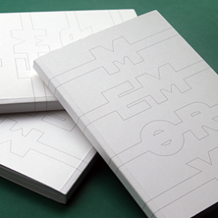</span>
<span class="project-name">Monuments can be controversial.</span>
<span class="title"><span class="client">Melik Ohanian</span><span class="type">Identity, Places, Research, Stories, Transparency</span></span>
</a>
</div>
<div class="post-thumb sortable year-2012 has-year cat-identity has-cat cat-interaction cat-places cat-research cat-stories cat-transparency cat-voices tag-architecture has-tag tag-matter-practice-architecture tag-new_york_city post-id-889">
<a class="top-link" href="portfolio/peace-quiet/index.html"></a>
<a class="real-link" href="portfolio/peace-quiet/index.html">
<span class="thumb">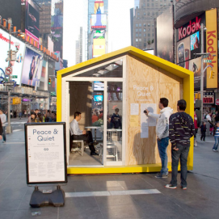</span>
<span class="project-name">The world’s greatest public intersection.</span>
<span class="title"><span class="client">Peace &amp; Quiet Dialog Station</span><span class="type">Identity, Interactive, Places, Research, Stories, Transparency, Voices</span></span>
</a>
</div>
<div class="post-thumb sortable year-2014 has-year cat-campaign has-cat cat-identity cat-research cat-transparency post-id-1732">
<a class="top-link" href="portfolio/moneylab-coining-alternatives/index.html"></a>
<a class="real-link" href="portfolio/moneylab-coining-alternatives/index.html">
<span class="thumb">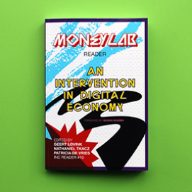</span>
<span class="project-name">MoneyLAB: Digital experiments with revenue models, payment systems and currencies.</span>
<span class="title"><span class="client">Institute of Network Cultures</span><span class="type">Campaign, Identity, Research, Transparency</span></span>
</a>
</div>
<div class="post-thumb sortable year-2014 has-year cat-identity has-cat cat-interaction cat-places post-id-1469">
<a class="top-link" href="portfolio/good-friends/index.html"></a>
<a class="real-link" href="portfolio/good-friends/index.html">
<span class="thumb"></span>
<span class="project-name">A slow life initiative.</span>
<span class="title"><span class="client">Good Friends</span><span class="type">Identity, Interactive, Places</span></span>
</a>
</div>
<div class="post-thumb sortable year-2014 has-year cat-places has-cat cat-research cat-stories post-id-1904">
<a class="top-link" href="portfolio/tortona-stories-monditalia-venice-architecture-biennale/index.html"></a>
<a class="real-link" href="portfolio/tortona-stories-monditalia-venice-architecture-biennale/index.html">
<span class="thumb"></span>
<span class="project-name">What do cheese, wine and bio tech all have in common?</span>
<span class="title"><span class="client">Venice Architecture Biennale, Monditalia, Tortona Stories</span><span class="type">Places, Research, Stories</span></span>
</a>
</div>
<div class="post-thumb sortable year-2009 has-year cat-research has-cat cat-stories cat-transparency cat-voices tag-new_york_city has-tag post-id-777">
<a class="top-link" href="portfolio/our-choice/index.html"></a>
<a class="real-link" href="portfolio/our-choice/index.html">
<span class="thumb">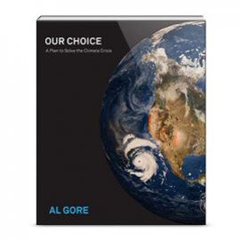</span>
<span class="project-name">Our choice, a plan to solve the climate crisis.</span>
<span class="title"><span class="client">Al Gore, Melcher Media</span><span class="type">Research, Stories, Transparency, Voices</span></span>
</a>
</div>
<div class="post-thumb sortable year-2013 has-year cat-idea has-cat cat-identity cat-places cat-research cat-transparency post-id-1491">
<a class="top-link" href="portfolio/freedomland/index.html"></a>
<a class="real-link" href="portfolio/freedomland/index.html">
<span class="thumb">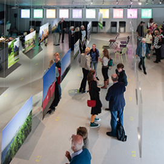</span>
<span class="project-name">How do you brand a mythical territory?</span>
<span class="title"><span class="client">FreedomLand</span><span class="type">Idea, Identity, Places, Research, Transparency</span></span>
</a>
</div>
<div class="post-thumb sortable year-2014 has-year cat-campaign has-cat cat-research cat-transparency post-id-1591">
<a class="top-link" href="portfolio/eu-2-do-memos-to-the-new-eu-leadership/index.html"></a>
<a class="real-link" href="portfolio/eu-2-do-memos-to-the-new-eu-leadership/index.html">
<span class="thumb">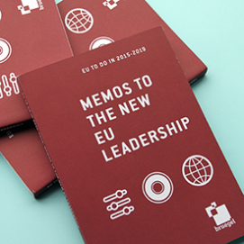</span>
<span class="project-name">To the Presidents of the European Commission, The European Council and The European Parliament</span>
<span class="title"><span class="client">Bruegel</span><span class="type">Campaign, Research, Transparency</span></span>
</a>
</div>
<div class="post-thumb sortable year-2014 has-year cat-identity has-cat cat-interaction post-id-1695">
<a class="top-link" href="portfolio/make-your-choice-2014-eu-election-guide/index.html"></a>
<a class="real-link" href="portfolio/make-your-choice-2014-eu-election-guide/index.html">
<span class="thumb">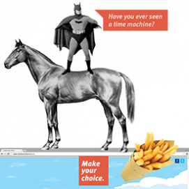</span>
<span class="project-name">Make Your Choice: 2014 EU Election Guide</span>
<span class="title"><span class="client">League of Young Voters</span><span class="type">Identity, Interactive</span></span>
</a>
</div>
<div class="post-thumb sortable year-2006 has-year cat-identity has-cat cat-places cat-research cat-stories cat-transparency cat-voices tag-new_york_city has-tag post-id-328">
<a class="top-link" href="portfolio/design-for-the-other-90-2/index.html"></a>
<a class="real-link" href="portfolio/design-for-the-other-90-2/index.html">
<span class="thumb">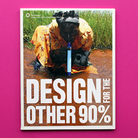</span>
<span class="project-name">Design should be open and accessible to everyone period</span>
<span class="title"><span class="client">Cooper-Hewitt National Design Museum</span><span class="type">Identity, Places, Research, Stories, Transparency, Voices</span></span>
</a>
</div>
<div class="post-thumb sortable year-2011 has-year cat-identity has-cat cat-interaction cat-transparency tag-austria has-tag tag-new_york_city tag-vienna post-id-129">
<a class="top-link" href="portfolio/belvedere-museum-guide/index.html"></a>
<a class="real-link" href="portfolio/belvedere-museum-guide/index.html">
<span class="thumb"></span>
<span class="project-name">18th century palaces updated for the 21st.</span>
<span class="title"><span class="client">Public New York City</span><span class="type">Identity, Interactive, Transparency</span></span>
</a>
</div>
<div class="post-thumb sortable year-2008 has-year cat-research has-cat cat-stories cat-transparency cat-voices tag-monachelli-press has-tag tag-new_york_city post-id-461">
<a class="top-link" href="portfolio/knoll-a-modernist-universe/index.html"></a>
<a class="real-link" href="portfolio/knoll-a-modernist-universe/index.html">
<span class="thumb">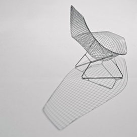</span>
<span class="project-name">We still have the key to the Knoll archive, really.</span>
<span class="title"><span class="client">Knoll</span><span class="type">Research, Stories, Transparency, Voices</span></span>
</a>
</div>
<div class="post-thumb sortable year-2011 has-year cat-campaign has-cat cat-identity cat-transparency cat-voices tag-loyal-kasper has-tag tag-motion-graphics tag-new_york_city post-id-690">
<a class="top-link" href="portfolio/weather-247-2/index.html"></a>
<a class="real-link" href="portfolio/weather-247-2/index.html">
<span class="thumb"></span>
<span class="project-name">Partly Windy, Partly Wild, Totally Wonderful.</span>
<span class="title"><span class="client">Weather 24/7 + Loyal Kasper</span><span class="type">Campaign, Identity, Transparency, Voices</span></span>
</a>
</div>
<div class="post-thumb sortable year-2013 has-year cat-stories has-cat cat-transparency tag-milky-way has-tag tag-space post-id-1455">
<a class="top-link" href="portfolio/planets-everywhere/index.html"></a>
<a class="real-link" href="portfolio/planets-everywhere/index.html">
<span class="thumb">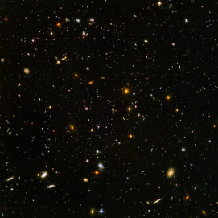</span>
<span class="project-name">As of 4 November 2013, Kepler has detected 3,568 possible new planets.</span>
<span class="title"><span class="client">Die Zeit - Planets Everywhere</span><span class="type">Stories, Transparency</span></span>
</a>
</div>
<div class="post-thumb sortable year-2013 has-year cat-idea has-cat cat-research cat-stories post-id-846">
<a class="top-link" href="portfolio/type-compass/index.html"></a>
<a class="real-link" href="portfolio/type-compass/index.html">
<span class="thumb">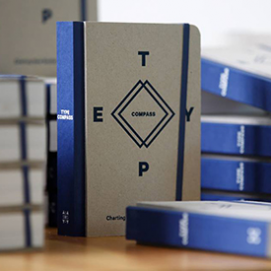</span>
<span class="project-name">We love typography, we love books, so we wrote and designed a book about typography.</span>
<span class="title"><span class="client">SHS Publishing</span><span class="type">Idea, Research, Stories</span></span>
</a>
</div>
<div class="post-thumb sortable year-2013 has-year cat-identity has-cat cat-places cat-transparency tag-rotterdam has-tag tag-the_netherlands post-id-839">
<a class="top-link" href="portfolio/cruise-terminal-rotterdam/index.html"></a>
<a class="real-link" href="portfolio/cruise-terminal-rotterdam/index.html">
<span class="thumb"></span>
<span class="project-name">It’s not always sunny in Rotterdam.</span>
<span class="title"><span class="client">Cruise Port Rotterdam</span><span class="type">Identity, Places, Transparency</span></span>
</a>
</div>
<div class="post-thumb sortable year-2008 has-year cat-idea has-cat cat-identity cat-places post-id-1881">
<a class="top-link" href="portfolio/theanyspacewhatever/index.html"></a>
<a class="real-link" href="portfolio/theanyspacewhatever/index.html">
<span class="thumb"></span>
<span class="project-name">A booked that spawned an artists’ revolt at the Guggenheim in New York City.</span>
<span class="title"><span class="client">Guggenheim New York</span><span class="type">Idea, Identity, Places</span></span>
</a>
</div>
<div class="post-thumb sortable year-2012 has-year cat-idea has-cat cat-research cat-stories cat-transparency tag-denmark has-tag post-id-162">
<a class="top-link" href="portfolio/education-requires/index.html"></a>
<a class="real-link" href="portfolio/education-requires/index.html">
<span class="thumb">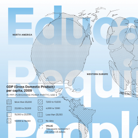</span>
<span class="project-name">Education requires people, money and instruments.</span>
<span class="title"><span class="client">Danish National Poster Museum</span><span class="type">Idea, Research, Stories, Transparency</span></span>
</a>
</div>
<div class="post-thumb sortable year-2008 has-year cat-identity has-cat cat-places cat-stories post-id-1928">
<a class="top-link" href="portfolio/new-york-studio-school/index.html"></a>
<a class="real-link" href="portfolio/new-york-studio-school/index.html">
<span class="thumb">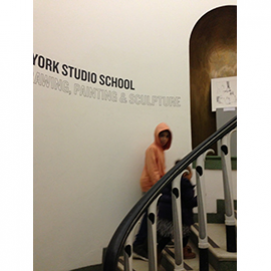</span>
<span class="project-name">New York City &amp; Drawing &amp; Painting &amp; Sculpture &amp; School.</span>
<span class="title"><span class="client">New York Studio School</span><span class="type">Identity, Places, Stories</span></span>
</a>
</div>
<div class="post-thumb sortable year-2005 has-year cat-identity has-cat cat-stories post-id-1861">
<a class="top-link" href="portfolio/errol-morris/index.html"></a>
<a class="real-link" href="portfolio/errol-morris/index.html">
<span class="thumb">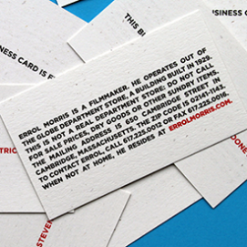</span>
<span class="project-name">Errol Morris is an American film director, this is his identity.</span>
<span class="title"><span class="client">Errol Morris</span><span class="type">Identity, Stories</span></span>
</a>
</div>
<div class="post-thumb sortable year-2013 has-year cat-identity has-cat tag-rotterdam has-tag tag-the_netherlands post-id-844">
<a class="top-link" href="portfolio/charlois-wine/index.html"></a>
<a class="real-link" href="portfolio/charlois-wine/index.html">
<span class="thumb"></span>
<span class="project-name">Wine is sunlight, held together by water.</span>
<span class="title"><span class="client">Giuseppe Licari</span><span class="type">Identity</span></span>
</a>
</div>
<div class="post-thumb sortable year-2011 has-year cat-identity has-cat cat-places tag-bangkok has-tag tag-thailand post-id-377">
<a class="top-link" href="portfolio/queen-sirikit-textile-museum/index.html"></a>
<a class="real-link" href="portfolio/queen-sirikit-textile-museum/index.html">
<span class="thumb"></span>
<span class="project-name">A Queen, a royal palace and a museum in Bangkok.</span>
<span class="title"><span class="client">Queen Sirikit Royal Museum of Textiles</span><span class="type">Identity, Places</span></span>
</a>
</div>
<div class="post-thumb sortable year-2013 has-year cat-identity has-cat cat-research cat-stories post-id-2188">
<a class="top-link" href="portfolio/ravenna-italy-mosaic-capital-italy/index.html"></a>
<a class="real-link" href="portfolio/ravenna-italy-mosaic-capital-italy/index.html">
<span class="thumb">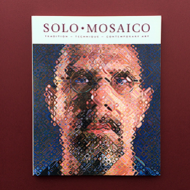</span>
<span class="project-name">Ravenna mosaic capital of Italy.</span>
<span class="title"><span class="client">SoloMosaico</span><span class="type">Identity, Research, Stories</span></span>
</a>
</div>
<div class="post-thumb sortable year-2012 has-year cat-idea has-cat cat-identity post-id-336">
<a class="top-link" href="portfolio/the-rainbow-country/index.html"></a>
<a class="real-link" href="portfolio/the-rainbow-country/index.html">
<span class="thumb">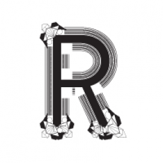</span>
<span class="project-name">Artists unite in Beverly Hills!</span>
<span class="title"><span class="client">Rainbow Country</span><span class="type">Idea, Identity</span></span>
</a>
</div>
<div class="post-thumb sortable year-2012 has-year cat-research has-cat cat-transparency tag-magazine has-tag post-id-864">
<a class="top-link" href="portfolio/the-great-plastiv-tide/index.html"></a>
<a class="real-link" href="portfolio/the-great-plastiv-tide/index.html">
<span class="thumb">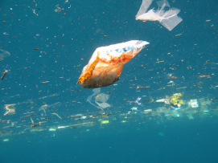</span>
<span class="project-name">The great plastic tide humanities greatest catastrophe.</span>
<span class="title"><span class="client">The Great Plastic Tide</span><span class="type">Research, Transparency</span></span>
</a>
</div>
<div class="post-thumb sortable year-2012 has-year cat-stories has-cat cat-transparency tag-die-zeit has-tag tag-hamburg post-id-126">
<a class="top-link" href="portfolio/die-zeit-der-alltagliche-tod/index.html"></a>
<a class="real-link" href="portfolio/die-zeit-der-alltagliche-tod/index.html">
<span class="thumb">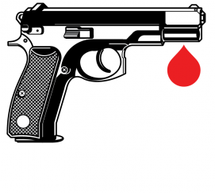</span>
<span class="project-name">Guns, Guns, Guns: Private Arsenals.</span>
<span class="title"><span class="client">Die Zeit</span><span class="type">Stories, Transparency</span></span>
</a>
</div>
<div class="post-thumb sortable year-2014 has-year cat-campaign has-cat cat-interaction post-id-1579">
<a class="top-link" href="portfolio/who-says-what/index.html"></a>
<a class="real-link" href="portfolio/who-says-what/index.html">
<span class="thumb">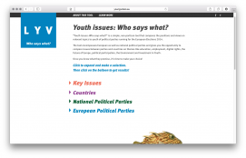</span>
<span class="project-name">Who Says What: Political Manifesto Guide</span>
<span class="title"><span class="client">League of Young Voters</span><span class="type">Campaign, Interactive</span></span>
</a>
</div>
<div class="post-thumb sortable year-2009 has-year cat-identity has-cat cat-places cat-research cat-stories cat-transparency cat-voices tag-architecture has-tag tag-matter-practice-architecture tag-new_york_city post-id-1299">
<a class="top-link" href="portfolio/new-practices-san-francisco-3/index.html"></a>
<a class="real-link" href="portfolio/new-practices-san-francisco-3/index.html">
<span class="thumb">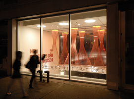</span>
<span class="project-name">What design looks like on no budget, literally.</span>
<span class="title"><span class="client">The Center for Architecture</span><span class="type">Identity, Places, Research, Stories, Transparency, Voices</span></span>
</a>
</div>
<div class="post-thumb sortable year-2009 has-year cat-places has-cat cat-stories cat-voices tag-architecture has-tag tag-matter-practice-architecture tag-new_york_city post-id-1322">
<a class="top-link" href="portfolio/museum-of-chinese-in-america/index.html"></a>
<a class="real-link" href="portfolio/museum-of-chinese-in-america/index.html">
<span class="thumb"></span>
<span class="project-name">A museum that started in a closet.</span>
<span class="title"><span class="client">Museum of Chinese in America</span><span class="type">Places, Stories, Voices</span></span>
</a>
</div>
<div class="post-thumb sortable year-2013 has-year cat-research has-cat cat-stories cat-transparency cat-voices tag-rotterdam has-tag tag-the_netherlands post-id-830">
<a class="top-link" href="portfolio/dcmr-milieudienst-rijnmond/index.html"></a>
<a class="real-link" href="portfolio/dcmr-milieudienst-rijnmond/index.html">
<span class="thumb"></span>
<span class="project-name">The environment is important. People need to be clued in.</span>
<span class="title"><span class="client">DCMR Milieudienst Rijnmond</span><span class="type">Research, Stories, Transparency, Voices</span></span>
</a>
</div>
<div class="post-thumb sortable cat-idea has-cat cat-transparency post-id-2075">
<a class="top-link" href="portfolio/an-experimental-security-encryption-based-on-trait-theory/index.html"></a>
<a class="real-link" href="portfolio/an-experimental-security-encryption-based-on-trait-theory/index.html">
<span class="thumb"></span>
<span class="project-name">An experimental security encryption based on Trait Theory.</span>
<span class="title"><span class="client">(HEEM) HANS EYSENCK ENCRYPTION MODEL</span><span class="type">Idea, Transparency</span></span>
</a>
</div>
<div class="post-thumb sortable year-2015 has-year cat-identity has-cat cat-interaction cat-places cat-research cat-voices post-id-1597">
<a class="top-link" href="portfolio/amateur-cities/index.html"></a>
<a class="real-link" href="portfolio/amateur-cities/index.html">
<span class="thumb"></span>
<span class="project-name">Amateurs are going to save the world.</span>
<span class="title"><span class="client">Amateur Cities</span><span class="type">Identity, Interactive, Places, Research, Voices</span></span>
</a>
</div>
<div class="post-thumb sortable year-2012 has-year cat-identity has-cat cat-stories cat-voices tag-magazine has-tag tag-rotterdam tag-the_netherlands post-id-1354">
<a class="top-link" href="portfolio/state-of-the-art/index.html"></a>
<a class="real-link" href="portfolio/state-of-the-art/index.html">
<span class="thumb">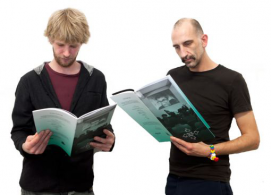</span>
<span class="project-name">From Ernest van der Kwast with love.</span>
<span class="title"><span class="client"></span><span class="type">Identity, Stories, Voices</span></span>
</a>
</div>
<div class="post-thumb sortable year-2012 has-year cat-identity has-cat cat-places cat-research tag-rotterdam has-tag tag-the_netherlands post-id-1247">
<a class="top-link" href="portfolio/with-one-eye-on-the-horizon/index.html"></a>
<a class="real-link" href="portfolio/with-one-eye-on-the-horizon/index.html">
<span class="thumb"></span>
<span class="project-name">How to reinvent moving images with one eye on the horizon.</span>
<span class="title"><span class="client"></span><span class="type">Identity, Places, Research</span></span>
</a>
</div>
<div class="post-thumb sortable year-2012 has-year cat-identity has-cat cat-transparency tag-architecture has-tag tag-new_york_city post-id-924">
<a class="top-link" href="portfolio/tolerance-deviances-and-reconciliations/index.html"></a>
<a class="real-link" href="portfolio/tolerance-deviances-and-reconciliations/index.html">
<span class="thumb">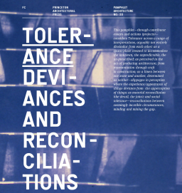</span>
<span class="project-name">Tolerance: Deviances and Reconciliations</span>
<span class="title"><span class="client">Matter Architecture Practice</span><span class="type">Identity, Transparency</span></span>
</a>
</div>
<div class="post-thumb sortable year-2012 has-year cat-stories has-cat cat-transparency post-id-858">
<a class="top-link" href="portfolio/search-supply-the-impact-of-uninterrupted-access/index.html"></a>
<a class="real-link" href="portfolio/search-supply-the-impact-of-uninterrupted-access/index.html">
<span class="thumb"></span>
<span class="project-name">Search &amp; Supply: The Impact of Uninterrupted Access</span>
<span class="title"><span class="client">Volume Magazine</span><span class="type">Stories, Transparency</span></span>
</a>
</div>
<div class="post-thumb sortable year-2008 has-year tag-architecture has-tag tag-monacelli-press post-id-246">
<a class="top-link" href="portfolio/modern-shoestring/index.html"></a>
<a class="real-link" href="portfolio/modern-shoestring/index.html">
<span class="thumb"></span>
<span class="project-name">A rich testing ground for architectural innovation.</span>
<span class="title"><span class="client">Monacelli Press</span><span class="type"></span></span>
</a>
</div>
<div class="post-thumb sortable year-2010 has-year cat-stories has-cat cat-voices tag-magazine has-tag tag-new_york_city post-id-669">
<a class="top-link" href="portfolio/9w-no-1/index.html"></a>
<a class="real-link" href="portfolio/9w-no-1/index.html">
<span class="thumb"></span>
<span class="project-name">Cyclist’s best-known escape route from New York City– loved, hated and endured.</span>
<span class="title"><span class="client">Harry Zernike</span><span class="type">Stories, Voices</span></span>
</a>
</div>
<div class="post-thumb sortable year-2009 has-year cat-identity has-cat tag-architecture has-tag post-id-153">
<a class="top-link" href="portfolio/greg-yang-design/index.html"></a>
<a class="real-link" href="portfolio/greg-yang-design/index.html">
<span class="thumb">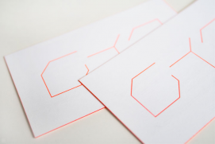</span>
<span class="project-name">Greg Yang Design needed a business card.</span>
<span class="title"><span class="client">Greg Yang Design</span><span class="type">Identity</span></span>
</a>
</div>
<div class="post-thumb sortable year-2011 has-year cat-idea has-cat cat-research cat-stories cat-transparency tag-rotterdam has-tag tag-the_netherlands post-id-533">
<a class="top-link" href="portfolio/16th-21rst-century/index.html"></a>
<a class="real-link" href="portfolio/16th-21rst-century/index.html">
<span class="thumb"></span>
<span class="project-name">Analyzing the traditions of flower arranging of the 16th century through the 21st.</span>
<span class="title"><span class="client"></span><span class="type">Idea, Research, Stories, Transparency</span></span>
</a>
</div>
<div class="post-thumb sortable year-2007 has-year cat-research has-cat cat-stories cat-voices post-id-444">
<a class="top-link" href="portfolio/layered-urbanism/index.html"></a>
<a class="real-link" href="portfolio/layered-urbanism/index.html">
<span class="thumb"></span>
<span class="project-name">Because of the scope of work this book took many people to make it.</span>
<span class="title"><span class="client">Yale School of Architecture</span><span class="type">Research, Stories, Voices</span></span>
</a>
</div>
<div class="post-thumb sortable year-2005 has-year cat-identity has-cat cat-places cat-stories post-id-1868">
<a class="top-link" href="portfolio/hautboy-hill-farm/index.html"></a>
<a class="real-link" href="portfolio/hautboy-hill-farm/index.html">
<span class="thumb">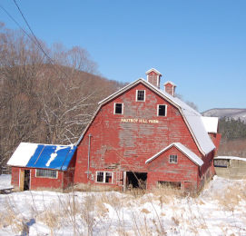</span>
<span class="project-name">Hautboy Hill Farm was founded in 1748.</span>
<span class="title"><span class="client">Hautboy Hill</span><span class="type">Identity, Places, Stories</span></span>
</a>
</div>
<div class="post-thumb sortable year-2012 has-year cat-idea has-cat cat-research cat-stories cat-transparency tag-rotterdam has-tag post-id-221">
<a class="top-link" href="portfolio/polyphasic-sleep-experiment/index.html"></a>
<a class="real-link" href="portfolio/polyphasic-sleep-experiment/index.html">
<span class="thumb"></span>
<span class="project-name">Sleep is important, but does it have to be all in one go?</span>
<span class="title"><span class="client"></span><span class="type">Idea, Research, Stories, Transparency</span></span>
</a>
</div>
</div>
</div>
</div>
<div class="footer">
</div>
</div>
<script src="wp-includes/js/wp-embed.min.js" type="text/javascript"></script>
</body>
</html>
